Projects and Stuff
Projects and StuffGame Boy Advance
Super Block Jump: Game Boy Advance Edition
A platformer with a very simple goal in mind, to get to the goal on the right side of the screen.
This is a conversion of a game I made on Scratch back in 2014 and updated all the way through 2016.


ROM Download
Nintendo 3DS .CIA Download
Source Code
Play Super Block Jump
Play Super Block Jump 2
Play Super Block Jump (Dark World)
Jan 28, 2016 5:28 AM Prototype
Feb 22, 2015 12:30 PM Prototype
Quick and dirty little Windows port made with Zinc (January 15, 2017, 8:33 PM Build)
Apparently, I was also really good at backing up old versions of this because I managed to dig up like 5 versions of the source code.
A version of the Intro demo + Source codeA copy of the source code from April 2016 (WARNING: This code is HORRENDOUS)
A copy of the source code from August 2016 (WARNING: This code is also HORRENDOUS)
The source code from March 2017. (THIS DOES NOT COMPILE)
The ROM + Source code from when it released on Scratch on May 11, 2017.
Misfortune Advance
A decent conversion of Misfortune.GB to the Game Boy Advance.
Devilion's port of Misforturne to the PC was decent, but i wanted it on an actual Game Boy.
I think I did OK on it, but I made it multiple years ago, and it definitely could be improved on.
 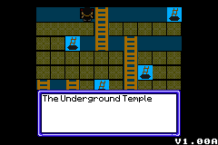
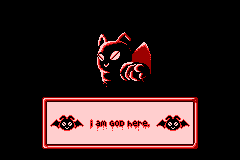
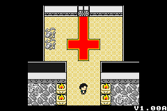
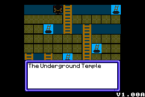
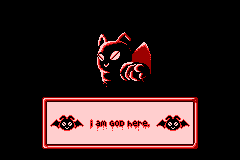
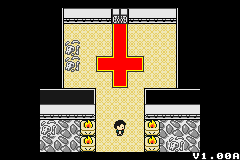
ROM Download
Source Code
Sonic.EXE (Game Boy Advance)
A crappy conversion of MY5TCrimson's Sonic.EXE fan remake to the Nintendo Game Boy Advance.
I hate this code now.
It was so lazily done and rushed.


ROM Download
Source Code (For archival purposes)
FNaF Office Test
A crappy demo I made in 2016 because I wanted to port FNAF to the Game Boy Advance like a dumdum
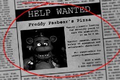 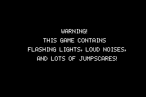 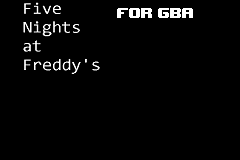 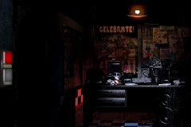ROM Download
Source Code
Unfinished code from my attempt to port FNaF (spaghetti warning)
HeartLib
A Game Boy Advance development library inspired by HAMLib and HELlib.
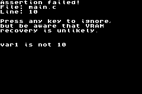 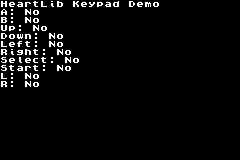
 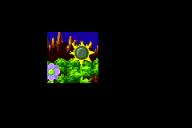
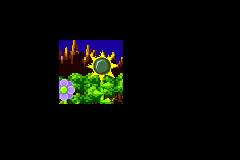
 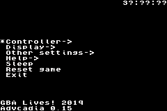
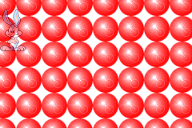
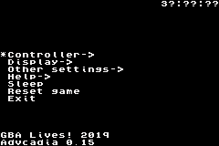
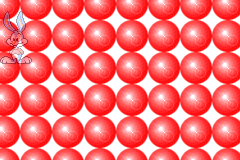
HeartLib supports most functions of the Nintendo Game Boy Advance, with the exception of Serial I/O.
It even supports some undocumented features such as SWI 0x26 (HardReset) or the Green Swap (?) register!
It has powered some of my Game Boy Advance homebrews such as Super Block Jump and Misfortune Advance, along with Chip8Adv and Advcadia, my RCA CHIP-8 and Emerson Arcadia 2001 emulators respectively.
AGB_Lib
AGB_Lib was a crappy library that I made based on gba.h by eloist from 2001. It has some of the most pointless functions in the world, such as one that will add numbers together. It was the predecessor to HeartLib, and HeartLib still has some of its DNA.
AGB_Lib download (For archival purposes)Undertale Tech Demo
A simple demo I made using HAM that helped me figure out how scrolling worked.

ROM Download
Source Code (For archival purposes)
Fidget Spinner Simulator
Annoy your friends with some extra proof that whatever god there is has abandoned us.

ROM Download
FNaF World Teaser Cycle
A really dumb demo I made in 2016 that is just a slideshow of various FNaF World teasers done in Mode 4.
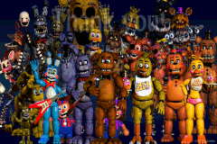
ROM Download
Source Code (For archival purposes)
FNaF GBA Teaser
One of the weakest demos I made, using Magic ARM Compiler. Just shows an image and thats it.
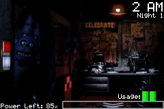ROM Download
MegaDemo
A crappy demo I made during my classes because I was bored. It's more like demoscene stuff and it showcased simple sprite movement and palette cycling.
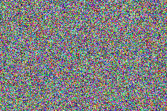

ROM Download
Source Code (For archival purposes)
Corrupted Image
A crappy "demo" that I made back in early 2016 because I didn't know how Dovoto's pcx2gba program worked.
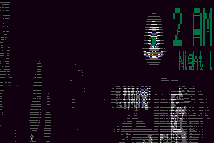ROM Download
Cool Looking BG Plasma
A demo I made of palette cycling, using an asset from Super Block Jump.

ROM Download
Rabbit Quiz
A dumb quiz I made about rabbits in 2016 for a science class.
Fun fact: I made this when I had no idea what I was doing with the GBA, and it literally took me months to get this to work.
 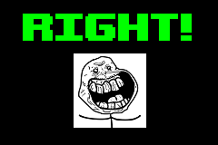
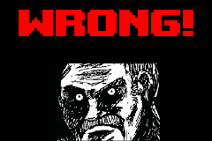
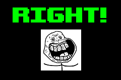
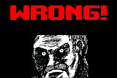ROM Download
Source Code (For archival purposes)
Direct Sound Demo
A demo I made using code from 3DSage that will play a sound through DMA.
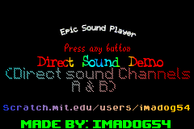ROM Download
Source Code (For archival purposes)
The Most Difficult Platformer Advance! Demo
A PoC of a game I made on Scratch back in 2015, reusing the physics engine from Super Block Jump.
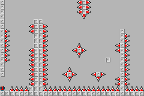ROM Download
However, there was also a demo that SCROLLED. It was made using HAM in conjunction with a Windows XP VM.
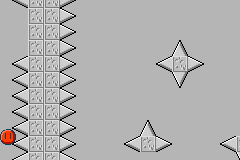ROM Download
Source Code (For archival purposes)
Original Game (Broken in Scratch 3.0)
Pixel Color Detection Demo
A demo from 2016 that showcases the reading of VRAM so that color collision in the Bitmap modes is possible.
ROM Download
Source Code (For archival purposes)
Undertale Fight Demo
There was a second Undertale tech demo, but all it was was an image, but hey it was a tilemap instead of a bitmap!
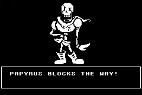ROM Download
Source Code (For archival purposes)
Microsoft Windows
MakeROMGBA
Microsoft Windows
MakeROMGBA
A crappy tool I wrote in 2016 to compile GBA ROMs with DevKit Advance.
Alternative variants were made that used devkitARM, and one was made for Super Block Jump (GBA).
The devkitARM variants never reached the performance of DevKit Advance because they didn't use the GCC optimization flags, but I didn't know that's how that worked. :P
It is highly discouraged to use these, as they promote very unhealthy and wasteful compilation habits.

Source Code (here for archival purposes)
Emulation Projects
Gigatron MAME Driver
A port of Phil Thomas' Gigatron.js emulator to the MAME framework.
There is a blog post about is here.
Gigatron website
Phil's emulator
My Gigatron driver
My Gigatron CPU code
Chip8Adv
A very simple reimplementation of the CHIP-8 virtual machine for the Game Boy Advance.
Created by RCA in 1977, CHIP-8 was made for the express purpose of easily making programs for the RCA COSMAC VIP and Telmac 1800 microcomputers.
This reimplementation was written with some assistance from CowGod's documentation and dmatlack's implementation for Linux using OpenGL.
It runs all standard CHIP-8 games just fine, but a lot of the more commonly found ones are using certain SuperChip instructions. No SuperChip instructions work.
This emulator was written as a PogoShell plugin, and is included as part of the Simple kernel for the EZ-Flash Omega and EZ-Flash Omega: Definitive Edition.
Source code (As of Jan 15, 2019)
AdvCadia
An Emerson Arcadia 2001 emulator for the Game Boy Advance.
Like Chip8Adv, this was also created as a PogoShell plugin, included with the Simple kernel.
It was derived from the Super Bug Advance emulator created by Amigan Software, porting it from HAMlib to HeartLib.
Compatibility is about the same as SuperBugAdvance, however I doubled the playfield size, and scaled the screen accordingly.
Not many games, if any, are considered playable, and the sound is very broken.
Just use MAME. :P
Source code